Hold to jump and fly; release, then press again quickly for a double jump. If Hugo splats into a wall, hold immediately to recover.
FOREST RUN COMPLETE
Nice flying!
0 m · 0 coins
Run across obstacle tops or fly over them. A front impact causes a recoverable splat—hold quickly before Hugo is pushed off screen.
RIMU & SAKURA RUN
A forest inspired by Hugo’s two homes
ANIMATION LAB
Hugo Sandbox
Every production animation, looping live.
Live previews
2D SANDBOX · VERSION 02
Authored 2D animation
Version 02 leaves the 3D rotation experiment behind. Outfit 03 is now Hugo’s locked visual reference, and new motion is authored as sequential character sheets before every approved drawing is extracted into its own named PNG.
03
canonical outfit
2
authored loops
48
named frames
12
timing FPS
NEW · CANONICAL CHARACTER
Outfit 03 reference + first V02 loops
Open the dedicated Sunrise Flight Suit page to review Hugo’s locked appearance, the bubble-gum neutral idle, the mischievous ready-profile jet check, individual frame files, playback timing, and the new animation framework.
OUTFIT 01 · SKYLINE
Skyline Flight Suit
Navy, cyan and teal with orange flight accents.
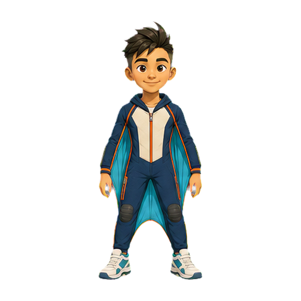
01Neutral front
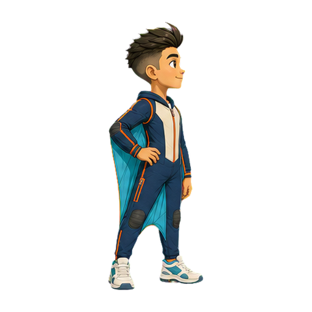
02Ready profile
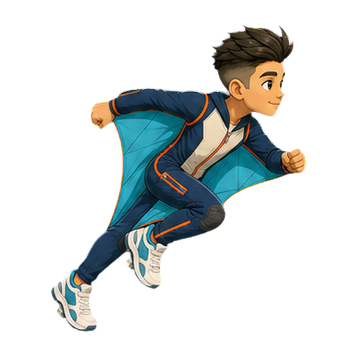
03Sprint launch
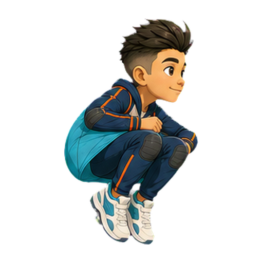
04Jump tuck
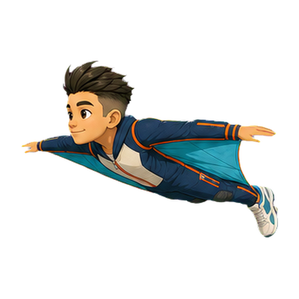
05Level glide
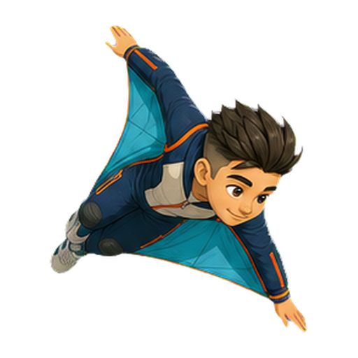
06Steep dive
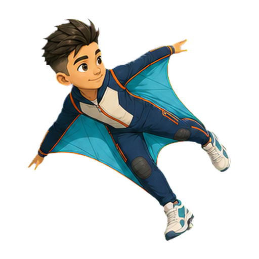
07Bank left
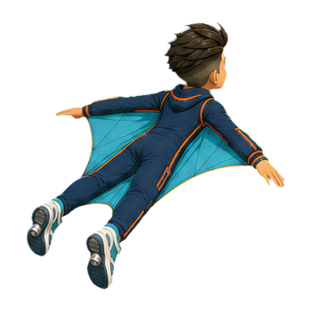
08Bank right
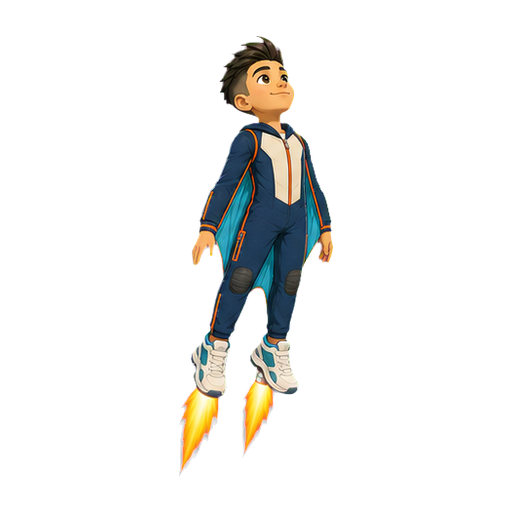
09Jet boost
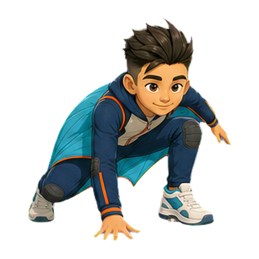
10Landing crouch
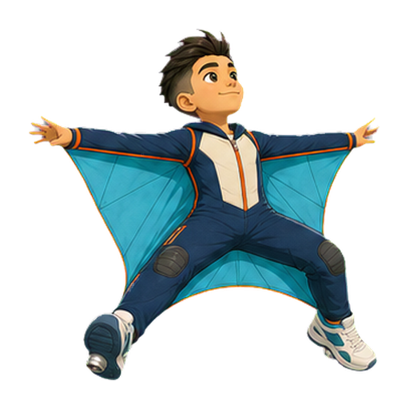
11Braking flare
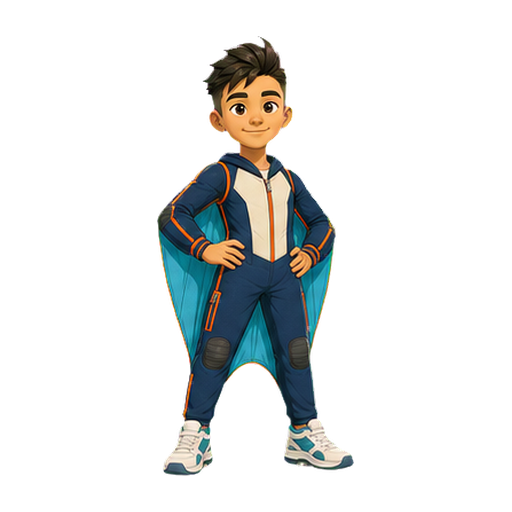
12Hero finish
OUTFIT 02 · NIGHT COMET
Night Comet Flight Suit
Midnight indigo, violet and electric cyan with silver panels.
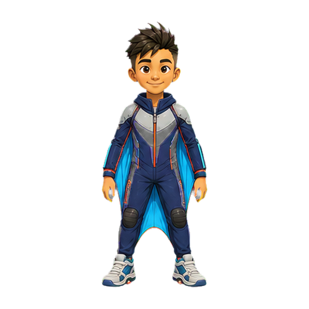
01Neutral front
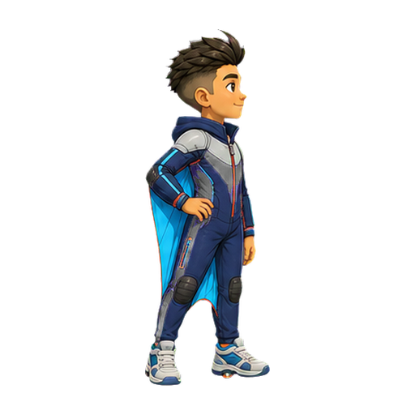
02Ready profile
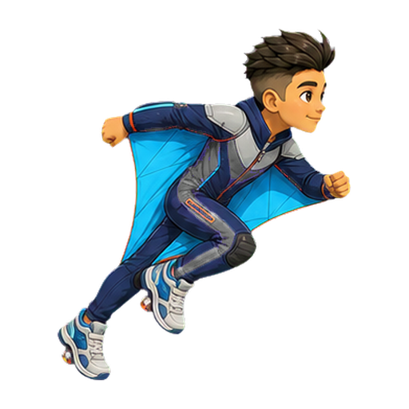
03Sprint launch
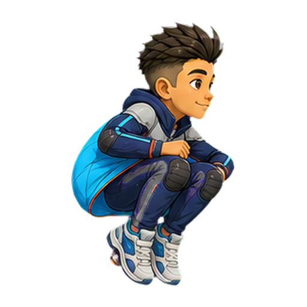
04Jump tuck
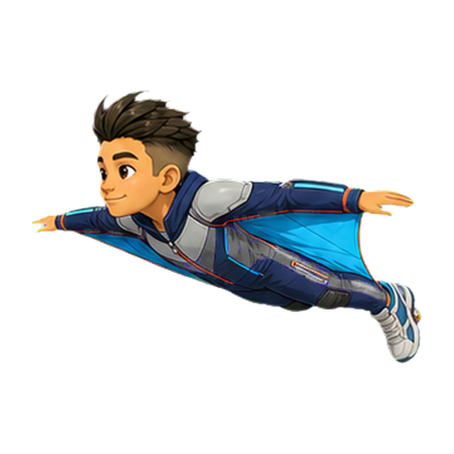
05Level glide
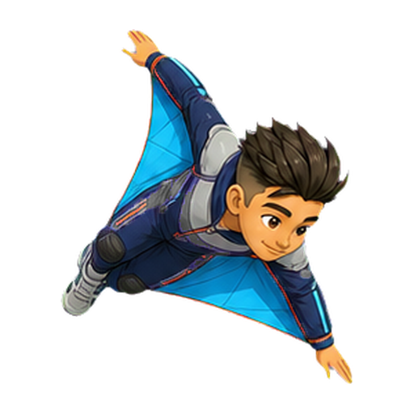
06Steep dive
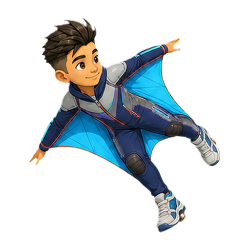
07Bank left
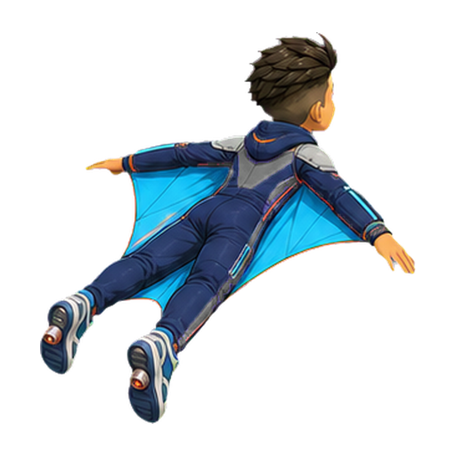
08Bank right
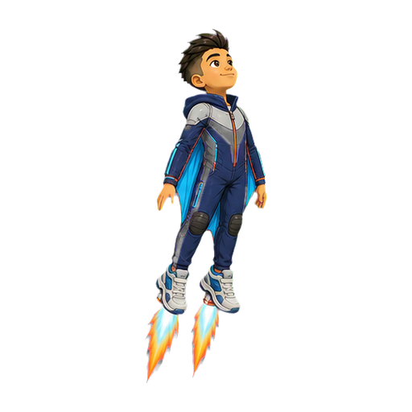
09Jet boost
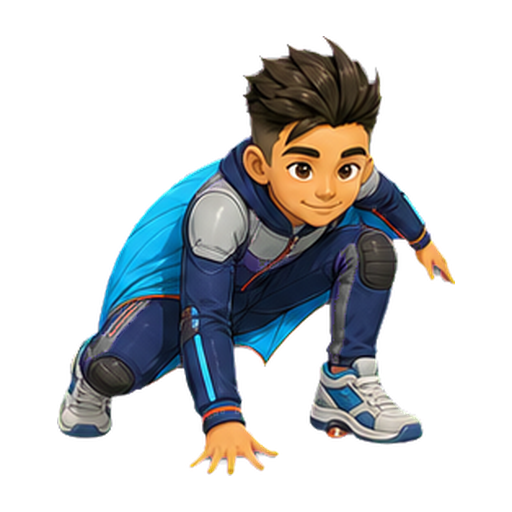
10Landing crouch
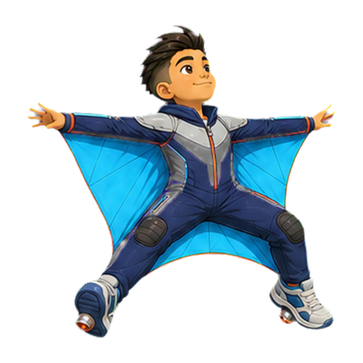
11Braking flare
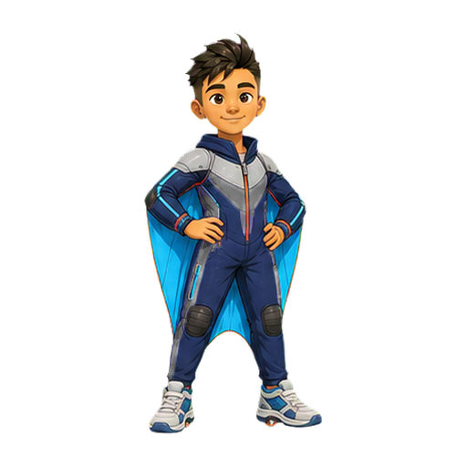
12Hero finish
SANDBOX · VERSION 01
Earlier 3D, rig and animation experiments
Everything below belongs to Version 01. It remains available for comparison, but Version 02 is the active 2D production direction.
GROUND
Running
60 frames · 2.00 s total · 30 FPS
AIR
Jump & land
8 frames · 2.40 s total · 3.33 FPS
AIR
Double jump
6 frames · 2.00 s total · 3 FPS
AIR
Freefall
6 frames · 0.60 s total · 10 FPS
FLIGHT
Powered flight
6 frames · 0.50 s total · 12 FPS
FLIGHT
Gliding
6 frames · 0.50 s total · 12 FPS
WIRE
Grinding
30 frames · 1.00 s total · 30 FPS
IMPACT
Wall recovery
6 frames · 2.80 s total · 2.14 FPS
FX
Shoe-fire cycle
30 frames · 1.00 s total · 30 FPS
VERSION 01 · PRODUCTION RESET
Animation V2 Framework
Smooth animation comes from controlled motion and continuity—not simply asking for more pictures. This is the standard every new Hugo animation should pass.
FOUNDATIONAL MOTION LANGUAGE
The 12 animation principles, translated for HUGO GO!
Frank Thomas and Ollie Johnston codified these principles from Disney studio practice. We use them as craft tools, then adapt them to a responsive sprite game where silhouette, collision readability, and transition speed matter.
01
Squash & stretch
Compress before takeoff or on impact; stretch through acceleration while preserving Hugo's apparent volume. Keep the gameplay hitbox independent from the artwork.
02
Anticipation
Use a small crouch, tuck, eye-line, or counter-move to prepare the player for a jump. It must communicate quickly enough to preserve responsive controls.
03
Staging
Make one action unmistakable at phone size. Protect Hugo's silhouette from scenery, particles, flames, and poses that merge hands, feet, or face.
04
Pose to pose + straight ahead
Lock gameplay contacts and extremes pose-to-pose. Animate hair, jacket hems, and fire more freely between them for organic secondary motion.
05
Follow-through & overlap
Hips and torso lead. Hair, jacket, arms, and shoes arrive and settle on slightly different frames so Hugo never stops as one rigid shape.
06
Slow in & slow out
Spacing starts tiny, grows consistently into speed, then shrinks toward a stop. Do not confuse an even 30 fps clock with evenly spaced drawings.
07
Arcs
Plot the paths of Hugo's head, hips, wrists, knees, ankles, and shoe heels. Curves should be smooth unless a deliberate collision redirects them.
08
Secondary action
Wind in the jacket, hair lag, facial focus, and shoe fire support the jump's main idea. If a secondary action steals the silhouette, reduce it.
09
Timing
Set action duration before frame count. A fast move may need a large positional gap; deleting an in-between can add energy instead of harming smoothness.
10
Exaggeration
Push the tuck, forward tilt, hang time, recoil, or glide opening beyond literal physics—then keep that visual physics consistent across the game.
11
Solid posing
Maintain anatomy, perspective, balance, weight, volume, and outfit construction in every drawing. No changing shoe size, limb length, or camera angle.
12
Appeal
Every pose should feel clear, confident, and unmistakably Hugo. Cool attitude never outranks readable action, friendly expression, or a strong silhouette.
TIMING + SPACING LAB
Smooth does not mean evenly spaced
Timing is the action's duration. Spacing is the distance between poses. Review both at speed and frame-by-frame.
Ease•• · • — • —— • ——— • —— • — • · ••
Small moves at the ends, increasingly wider moves through the middle. Spacing must not accidentally shrink while the action is still accelerating.
Fast action•• · • —— • ——————— • —— • · ••
A purposeful large gap can read as speed when the entry and exit poses are clear. Test deleting weak in-betweens if a jump or spin feels sluggish.
Impactanticipate → SNAP → recoil
Do not ease through contact. Transfer energy sharply, then show squash, recoil, follow-through, and any displaced object reacting according to its weight.
Settleovershoot ↔ smaller ↔ tiny → rest
After a stop, allow diminishing reversals: torso first, then jacket and hair. A clean settle feels physical without turning into a wobble loop.
01
Lock Hugo first
Start from one approved identity sheet: exact face, body proportions, outfit, palette, viewing angle, scale, lighting, and a fixed body registration point. Nothing is generated before those invariants are written into the prompt.
02
Plan the motion arc
Define anticipation, contact, extreme, passing, impact, recoil, settle, and loop-seam poses before making in-betweens. Plot both timing and spacing; both legs and both arms must complete their intended arcs.
03
Generate controlled groups
Generate each new part or action as a coherent fixed-grid atlas, not a pile of unrelated images. Lock camera, silhouette scale and chroma background; keep sequential deltas controlled, and overlap boundary poses only when one action genuinely needs multiple sheets.
04
Clean and register
Remove the background to alpha, isolate every connected figure, cut the sheet into individual files, then normalize each frame to the same dimensions and pivot. Preserve sharp source pixels and record degree, source cell, sockets, and gameplay anchors in a manifest.
05
Reject continuity failures
Inspect limb count, arcs, spacing direction, weight, silhouette, face and clothing drift, scale jumps, frozen anatomy, edge halos, and loop hitches. A/B test frame removals: an unnecessary in-between is also a failure.
06
Approve in this Sandbox
Review at speed, paused, and frame-by-frame. Only promote V2 into gameplay after its numbered frames, loop seam, collision silhouette, and transition into the animations before and after it are approved.
FRAME POLICY
30 fps is playback—not a quality guarantee
Use 30 unique frames only when there are 30 meaningful, correctly ordered changes. A clean 12–18-pose action with intentional timing is better than 30 inconsistent drawings. For subtle wind and freefall loops, 24–30 tiny changes are useful; for impacts, holds and timing matter more than volume.
Run
18–24 unique poses · 30 fps · 0.8–1.0 s
Freefall / glide
24–30 unique poses · 30 fps · 1.0 s
Jump / land
10–14 unique poses · 30 fps · non-looping
Double jump
12–18 unique poses · 30 fps · non-looping
Grind
16–24 unique poses · 30 fps · 0.8–1.0 s
Impact / recovery
8–12 key poses · timed holds · non-looping
V2 PROTOTYPE
Freefall V2 — Wingsuit posture
24 frames · 0.80 s total · 30 FPS
V2 PROTOTYPE
Double Jump V2 — Corkscrew release
16 frames · 0.53 s total · 30 FPS
LAYERED RIG V2
Running V2 — Code-driven puppet
30 frames · 1.00 s total · 30 FPS
One reusable 16-part Hugo · hips, knees, shoulders, elbows, hair and jacket interpolated in code
Tall hero posture · relaxed opposing arm swing · pelvis, spine, chest, neck, heel and toe nodes
WALKING V4 · GENERATED ART
Confident Walk V4 — Painted rig
36 frames · 1.20 s total · 30 FPS
Same bones and contacts as the left card · generated parts are textures fitted to approved sockets
WALKING V5 · SOURCE LOCK
Confident Walk V5 — Corrected sockets
36 frames · 1.20 s total · 30 FPS
Full shoulder-to-elbow and elbow-to-hand bones · shoe soles registered below the ankle · side-torso armhole drives the shoulder
WALKING V5 · PAINTED SOURCE LOCK
Confident Walk V5 — Side-on painted rig
36 frames · 1.20 s total · 30 FPS
The actual side-on torso is now used · sleeve openings own shoulder and elbow sockets · ankle pivots sit inside both shoes
INTERACTIVE V6 LIMB SHEET
Plain-language part names and joint paths
Hover, focus, or click a label to isolate its exact art and joints. Left parts are the brighter front layer; right parts are the darker back layer. Use these names when describing fixes—for example, “lengthen the left-upper-arm between the left shoulder and elbow.”
WALKING V6 · JOINT TRUTH
Confident Walk V6 — Stable skeleton
36 frames · 1.20 s total · 30 FPS
Fixed left/right elbow branches · separate wrist and hand bones · knees stay connected through the full stride
WALKING V6 · PAINTED RIG
Confident Walk V6 — Modular skin
36 frames · 1.20 s total · 30 FPS
Same V6 joints as the left card · hands are independent parts · each ankle now sits in the shoe opening instead of on its heel
HEAD TURN · GEOMETRY
360° Head Turn — Landmark rig
24 frames · 0.80 s total · 30 FPS
Head only · crown, hairline, eyes, ears, nose, mouth, chin and nape rotate around one fixed vertical pivot
HEAD TURN · GENERATED ART
360° Head Turn — Painted views
24 frames · 0.80 s total · 30 FPS
24 isolated generated views · stable centre and scale · strict cell clipping removes every neighbouring-head fragment
HEAD TURN V2 · FIXED GEOMETRY
360° Head Turn V2 — Registration rig
24 frames · 2.00 s total · 12 FPS
The yellow registration box never moves · every facial landmark rotates around one permanent centre · default speed is 0.40×
HEAD TURN V2 · FIXED ART
360° Head Turn V2 — Stabilized views
24 frames · 2.00 s total · 12 FPS
24 complete connected silhouettes · identical 240 px source height · common centre · 40 px transparent top and bottom gutters · exact seam bookend
HEAD TURN · DEGREE GEOMETRY
360° Head Turn — Angle map
24 frames · 2.00 s total · 12 FPS
↔ Hold and drag left or right to rotate manually
0° front · clockwise in 15° steps · 90° left profile · 180° back · 270° right profile · every geometry frame maps one-to-one to one named PNG
HEAD TURN · INDIVIDUAL ART
360° Head Turn — Degree-named files
24 frames · 2.00 s total · 12 FPS
↔ Hold and drag left or right to rotate manually
24 separate transparent PNGs · filenames encode 000° through 345° · one coherent approved source · no runtime sheet slicing, cross-sheet interleaving, or invented bridge frames
HEAD TURN 60 FPS · GEOMETRY
360° Head Turn — 7.5° angle map
48 frames · 0.80 s total · 60 FPS
↔ Hold and drag left or right to rotate manually
0° front · clockwise in 7.5° steps · every green anchor is preserved · every yellow midpoint belongs only to its two neighbouring approved views
HEAD TURN 60 FPS · PAIRED ART
360° Head Turn — 48 individual views
48 frames · 0.80 s total · 60 FPS
↔ Hold and drag left or right to rotate manually
48 separate transparent PNGs · 24 byte-identical approved anchors + 24 pair-specific midpoint images · filenames encode every 7.5° angle · no runtime sheet slicing
TORSO TURN · SHEET EXTRACTED
360° Torso Turn — 24 registered views
24 frames · 2.00 s total · 12 FPS
↔ Hold and drag left or right to rotate manually
One coherent 6×4 generated atlas · 24 connected silhouettes cut into degree-named transparent PNGs · empty collar socket · no head or limbs
HEAD + TORSO · SOCKET SYNC
360° Head & Torso — Matched angles
24 frames · 2.00 s total · 12 FPS
↔ Hold and drag left or right to rotate manually
Same frame index = same 15° angle · the approved head owns the neck · head renders behind the torso so the ribbed collar naturally masks the neck base
Hugo’s canonical character reference and authored animation loops.
Canonical
THE NEW CHARACTER STANDARD
Sunrise Hugo is the reference.
Outfit 03 now defines Hugo’s face, fauxhawk, age, proportions, wingsuit construction, orange-and-cream palette, shoes, and twin heel jets. Future V02 animation must return to these approved shapes instead of quietly redesigning him from sheet to sheet.
12
reference poses
2
authored loops
24
files per loop
640
px frame canvas
OUTFIT 03 · SUNRISE
Canonical pose library
Burnt orange, cream and gold with teal engineering details.
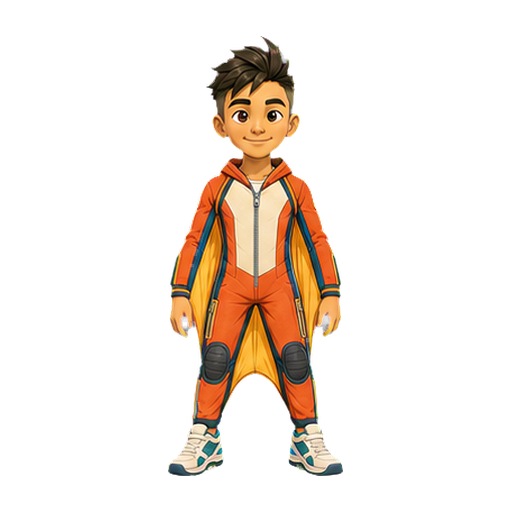
01Neutral front
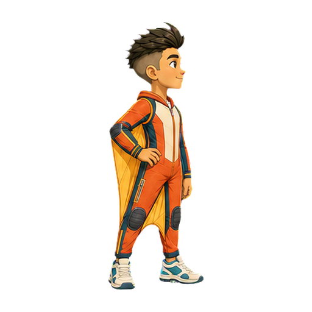
02Ready profile
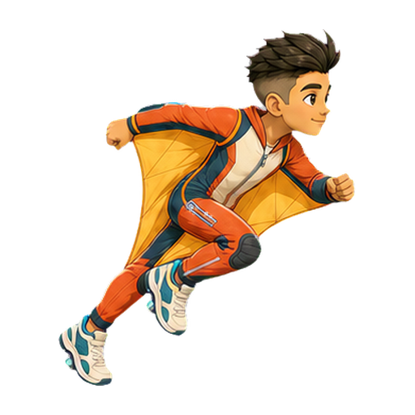
03Sprint launch
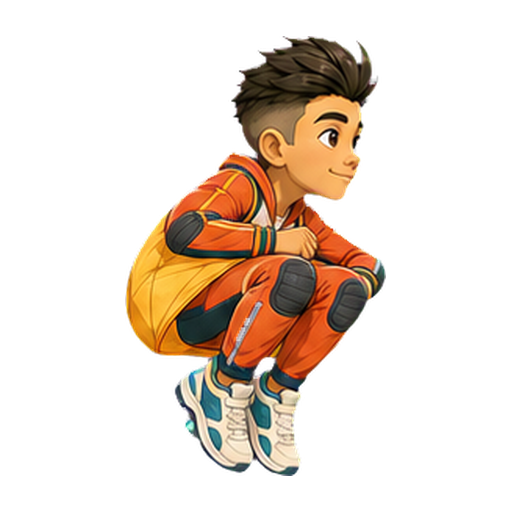
04Jump tuck
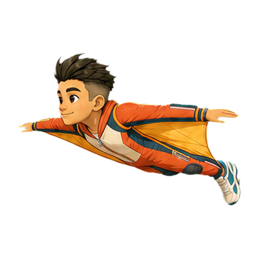
05Level glide
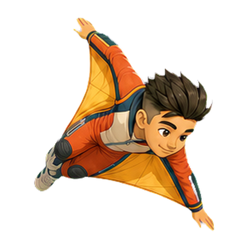
06Steep dive
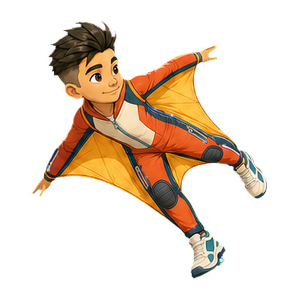
07Bank left
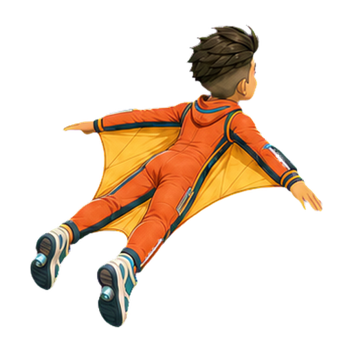
08Bank right
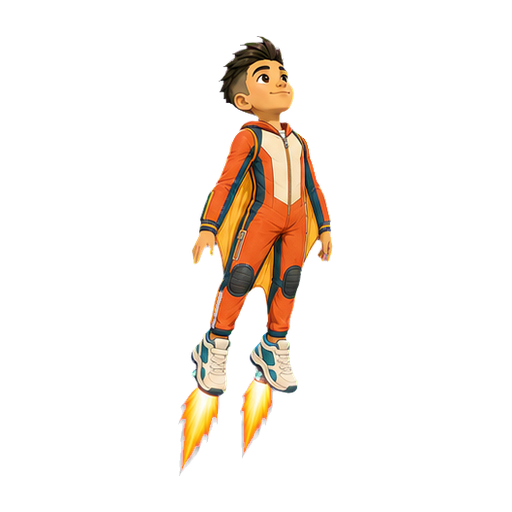
09Jet boost
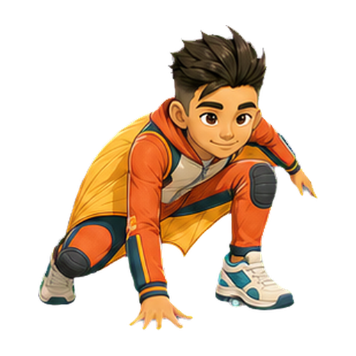
10Landing crouch
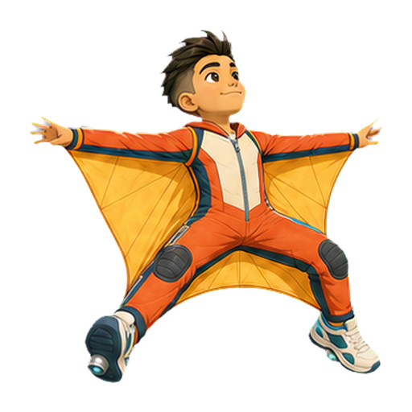
11Braking flare
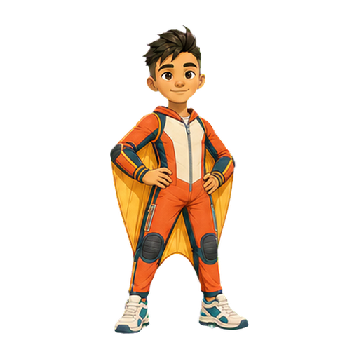
12Hero finish
FIRST PRODUCTION LOOPS
Frame-by-frame animation review
The player reads named transparent PNGs—not sprite-sheet rectangles. Start, pause, step, inspect any drawing, loop, or change playback speed.
NEUTRAL IDLE · CONTINUITY PASS
Compare neighbours; never invent a replacement sequence.
This pass reviewed every pair in order—01→02, 02→03, and onward—then inserted a drawing only where the visible path, expression, or contact genuinely skipped a beat.
01
Freeze the approved order
Keep every accepted PNG in place. Reject a broken drawing directly: the old three-arm frame 21 was removed, not hidden, repaired, or used as an endpoint.
02
Audit A against B
Inspect one adjacent pair at a time at the same registration. Check head, hips, shoulders, elbows, wrists, knees, feet, eye line, gum shape, silhouette, and balance.
03
Use a difference overlay
Render A-only pixels red, B-only pixels cyan, and overlap white. Silhouette IoU and centroid movement expose jumps, but a human still decides whether the gap is missing motion or intentional speed.
04
Classify the transition
Keep micro-movement as-is. Preserve deliberate contacts and impacts. Add an in-between only for a broken arc, unexplained teleport, abrupt expression change, or skipped material deformation.
05
Bracket one target
Give the model exact A and B production PNGs with one blank centre cell. Ask for that temporal fraction only, with anatomy, outfit, identity, registration, and action-specific invariants.
06
Lock the body root
Extract only the centre targets, then align the two cream chest panels to frame 01. Hands, feet, and gum may travel, but their changing silhouette must never counter-slide or resize Hugo’s torso.
VERSION 02 FRAMEWORK
Draw the performance, then build the files.
Disney’s animation principles guide the motion; deterministic extraction and registration make it usable in a game.
01
Lock Outfit 03
Start from the approved neutral or profile reference. Preserve Hugo’s identity, proportions, outfit construction, palette, shoes, and jet outlets.
02
Storyboard the idea
One loop gets one readable idea. Define its start pose, anticipation, action, reaction, settle, and exact return before generating art.
03
Time before drawing
Choose the action duration first. Use longer holds for thought and appeal, short exposures for snaps and impacts, and deliberate spacing for speed.
04
Pose to pose
Lock storytelling keys and extremes. Check staging, solid posing, arcs, silhouette, balance, anatomy, and contact points at phone size.
05
Use Disney principles
Build anticipation, squash and stretch, slow in/out, follow-through, overlap, secondary action, exaggeration, timing, and appeal around the main action.
06
Generate sequential sheets
Use 4 × 3 sheets in strict chronological order. Continue from the preceding sheet’s final state; never interleave unrelated sheet generations.
07
Extract individual PNGs
Remove chroma, keep one complete silhouette per file, name every action clearly, and register all frames to a fixed 640 px canvas and baseline.
08
Prove the loop seam
Frame 24 is an exact copied file of frame 01 and is review-only. Runtime plays frames 01–23, using timing metadata rather than duplicate hold drawings.
2D SANDBOX · NEW DIRECTION
Version 03
Canonical Sunrise poses and the new side-profile gameplay library.
Active
VERSION 03 · CHARACTER STANDARD
Sunrise Hugo, built for readable motion.
The original Outfit 03 library remains canonical. The side-profile library now offers thirty-five clean gameplay ideas, each wearing black sculpted basketball shoes with compact heel-jet outlets.
24
approved poses
35
side-view ideas
4 × 3
sheet format
OUTFIT 03 · SUNRISE
Canonical pose library
Burnt orange, cream and gold with teal engineering details.